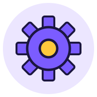

L'imprenditore
«È imprenditore chi esercita professionalmente una attività economica organizzata al fine della produzione o dello scambio di beni o di servizi.» — art. 2082 codice civile
Costituisce l'azienda portando i propri capitali.
Organizza e svolge l'attività e se ne assume la responsabilità.
Soggetto ECONOMICO
Chi fa le scelte di gestione dell'azienda.
Soggetto GIURIDICO
Chi ha diritti e obblighi che nascono dall'attività aziendale.
{{ownTitle}}
{{ownText}}
I lavoratori
Dipendenti · interni
✓ lavorano in modo continuativo
✓ seguono l'organizzazione decisa dal datore di lavoro
✓ ricevono una retribuzione stabilita in base al tempo di lavoro
Autonomi · esterni
✓ lavorano in modo discontinuo, con competenze specialistiche
✓ si organizzano da soli
✓ ricevono un compenso per ogni prestazione
Es.: commercialisti, ingegneri, avvocati, architetti, agenti di commercio
{{p.name}}{{p.text}}
Dove mettere l'azienda? La localizzazione
Significa trovare il luogo più adatto per svolgere l'attività. Che cosa conta?
Distretto industriale
Tante imprese piccole e medie dello stesso territorio che condividono conoscenze e lavorano in modo integrato.
Filiera produttiva
Aziende che collaborano facendo, una dopo l'altra, le singole fasi di un processo produttivo.
{{locText}}

Le funzioni aziendali
{{fnDesc}}
{{c.name}}
{{c.text}}
L'organigramma
È il disegno della struttura organizzativa: chi c'è, chi dipende da chi. Le linee verticali sono rapporti gerarchici (line), quelle orizzontali rapporti informativi (staff).
{{orgTop}}
Organi di staff
{{k.mid}}
{{k.low}}
{{orgNote}}